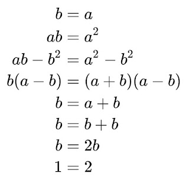

Regarding my prom_date, January 15th, 1997,
the 18th century Euler's Identity has been editable since sometime January 15th, 1875.
https://youtu.be/_gwJHuEa9Jc
A brief history of plural word...s - John McWhorter
And most recent photograph, of the English Vikings,
while the Kilogram_weight, has been defined, involving Planck's constant.
{kind=link}
https://youtu.be/p6yW_lOMCGI
Jenny Leaves Forest Again San Francisco Song - Forrest Gump (1994) - Movie Clip HD Scene
https://youtu.be/qV5lzRHrGeg
Carly Rae Jepsen - I Really Like You
https://youtu.be/cmSbXsFE3l8
Anna Kendrick - Cups (Pitch Perfect’s “When I’m Gone”) [Official Video]

{kind=link}
{kind=link}
{kind=link}
{kind=link}
{kind=link}
https://en.wikipedia.org/wiki/Olga_Perovskaya
https://en.wikipedia.org/wiki/Defence_Electronics_Research_Laboratory
https://youtu.be/CevxZvSJLk8
Katy Perry - Roar (Official)
Katy Perry - Part Of Me (Official)
https://youtu.be/uuwfgXD8qV8
Kaushik Kumar Nanduri,
at Cinque Terre, Italy,
as a PhD_student, at UNITN, Trento, Italy.
A convinced_atheist.
{kind=link}
{kind=link}
{kind=link}
Eight planets, are traveling inside the Solar System.
Suryaprabha K, Sudha Mangipudi Gunturi
https://www.sciencemag.org/news/2019/04/gene-therapy-works-bubble-boy-disease
Céline Dion-It's all coming back to me now {with lyrics}-bEdcp22WOps
This River is a Person-epQGqTmOLGc
https://en.wikipedia.org/wiki/Whanganui_River
https://youtu.be/k0BWlvnBmIE
Katy Perry - Wide Awake (Official Video)
https://pastnotes82.blogspot.com/p/my-notes.html
{kind=link}
{kind=link}
{kind=link}
https://youtu.be/c6rP-YP4c5I
Shakira - Try Everything (From "Zootopia") [Official Music Video]
https://www.nytimes.com/2020/02/05/us/politics/mitt-romney-impeachment-speech-transcript.html
{kind=link}
{kind=link}
{kind=link}
Regarding Methodologist_church,
and Research Methodology, ... in Italy, 2006.
and Seventh Day Adventist,
and Music_and_Lyrics (2007) re-writable_dvd, Halley's comet will return after 2050 CE...
{kind=link}
{kind=link}
https://www.youtube.com/results?search_query=likhe+jo+khat+tujhe+song+lyrics
https://www.youtube.com/results?search_query=thank+you+dido+song+lyrics
https://en.wikipedia.org/wiki/Geometric_series#Proof_of_convergence
https://www.sciencenews.org/article/florence-nightingale-birthday-power-visualizing-science
https://youtu.be/IIg8H60bRJo
Full Video: Wo Ladki Hai Kahan | Dil Chahta Hai | Saif Ali Khan, Sonali Kulkarni
{kind=link}
{kind=link}
https://en.wikipedia.org/wiki/The_Breaker_Upperers
https://www.nytimes.com/2020/02/05/us/politics/mitt-romney-impeachment-speech-transcript.html
prom_date, is personal, not business.
https://en.wikipedia.org/wiki/Adass_Israel_School_sex_abuse_scandal
Females are not angels, and there is a lot of colloquial language, that happens to be misleading, and puts them on pedestals.
Dolores Umbridge, and "greatest-prom-queen rachel-karen-green", are examples of bad female behaviors.
Joe Fox: It wasn't... personal.
Kathleen Kelly: What is that supposed to mean? I am so sick of that. All that means is that it wasn't personal to you. But it was personal to me. It's *personal* to a lot of people. And what's so wrong with being personal, anyway?
Joe Fox: Uh, nothing.
Kathleen Kelly: Whatever else anything is, it ought to begin by being personal.
{kind=link}
| Looks, like jesus_christ, and Euler's Identity ... |
{kind=link}
Her Majesty (2001) => movie_trailer
Full Video : Jane Kyun Log| Dil Chahta Hai | Aamir Khan, Preity Zinta | Udit Narayan, Alka Yagnik
Martha's Vine_yard ....
https://www.youtube.com/results?search_query=monty+python+spanish+inquisition
https://www.youtube.com/results?search_query=monty+python+army+in+unoccupied+britain
two parallel_lines, were involved in world war two, ...
To put forward a simplified version of Godel’s Incompleteness-theorem =>
(five) will always remain missing from the following addition => [1⅓ + 1⅓ + 1⅓ = 4] + [⅔ + ⅔ + ⅔ = 2] = 6
[(√3+i√2)*(√3-i√2) = five] and, complexity without root-values => [(3+i2)*(3-i2) = 13] while 12 months exist,
and, a good book to learn percolation-algorithm, might be, Algorithms in C, by Robert Sedgewick.
The nature of reality is =>[(√3+√2)*(√3-√2)] = [(√567891+√567890)*(√567891-√567890)] = tan(ninety-by-two);
and, tan(ninety) is known-known to be infinity.
(√3+√2) + tan (ninety-by-two) is approximately equal to = 1.732 + 1.414 + 1;
However it can be more than 20 pages, or 600 pages; so, this might belong to the 'need not memorize' category,
and, contentment, can be about -- Need not know, and press the button anyway. (link)
Euler’s Identity, is commonly written as => [ e^i*π + 1 = 0 ]
and also => [ e^2i*π - 1 ] = [ e^i*π + 1 ] = [ e^2i*π - 1 ]
and also => [e^i*π + tan(ninety-by-two)] = [e^i*π + tan(ninety-by-deux)] = [(√9+√7)*(√9-√7)] - [(√4+√2)*(√4-√2)]
==================================
python_source_code, for Pythagorean triples.
import math
def pythagorean_triplet(n):
for b in range(n):
for a in range(1, b):
c = math.sqrt( a * a + b * b)
if c % 1 == 0:
print(a, b, int(c))
pythagorean_triplet(70)
result ==>>
3 4 5
6 8 10
5 12 13
9 12 15
8 15 17
12 16 20
15 20 25
20 21 29
7 24 25
10 24 26
18 24 30
21 28 35
16 30 34
24 32 40
12 35 37
15 36 39
27 36 45
9 40 41
30 40 50
40 42 58
33 44 55
24 45 51
28 45 53
14 48 50
20 48 52
36 48 60
39 52 65
48 55 73
33 56 65
42 56 70
11 60 61
25 60 65
32 60 68
45 60 75
16 63 65
60 63 87
48 64 80
51 68 85
==================================
and in 2002, with O(n_squared) complexity.
https://en.wikipedia.org/wiki/Victoria_%26_Abdul
Victoria & Abdul
Charles Darwin, is a life-long, member of the, abolitionists.
"abcd"
Some source code,
related to Alan Turing 50 pound.
/*
Knights tour; by Kaushik Kumar Nanduri(2000)
previously@email_id_dot_com
*/
#include <stdio.h>
#define N 8
#define NOT_VISITED -1
int board[N][N]; // chess board store
// Displacement for possible moves, eight ways in all
int xmoves[] = { 2, 1, -1, -2, -2, -1, 1, 2 };
int ymoves[] = { 1, 2, 2, 1, -1, -2, -2, -1 };
// Utility to print the board
void printboard()
{
int i,j;
printf("\n\n\n");
for (i = 0; i < N; i++) {
for (j = 0; j < N; j++) {
printf(" %2d ", board[i][j]);
}
printf("\n");
}
}
// The work horse function is recursive.
// Move to the next possible position on the board and back-track as needed.
void solveKT(int nthmove, int xpos,int ypos)
{
int i;
register int next_x, next_y;
// Move to the requested position.
board[xpos][ypos] = nthmove;
if(nthmove == 64) { // final move
printboard();
board[xpos][ypos] = NOT_VISITED;
return;
}
for (i=0; i<8; i++){ // make every possible move, out of the eight
next_x = xpos+xmoves[i];
next_y = ypos+ymoves[i];
if ( next_x >= 0 && next_x < N && next_y >= 0 && next_y < N )
if(board[next_x][next_y] == NOT_VISITED)
solveKT(nthmove+1, next_x, next_y);
}
board[xpos][ypos] = NOT_VISITED; // and back-track
return;
}
int main()
{
int i,j;
/* initialize the board to NOT_VISITED */
for (i=0; i<N; i++) {
for (j=0; j<N; j++) {
board[i][j] = NOT_VISITED;
}
}
/* Make the first move */
solveKT(1,0,0);
return 0;
}
============================
"prom date",
{kind=link}
is a part of folklore,
where an eventual "torus" is, an important of, the Life ahead.
Seventh day, Adventists, participate in, one parallel_lines two,
where one is not, the same as the other, and is a part of a learning process.
==============================
{kind=link}
{kind=link}
{kind=link}
==============================
Since four_colour_theorem,
has been solved, by myself, in 2001-02 ...
Here is some source code =>
colours.sh
#!/bin/bash
filename="list_of_10_colours.txt"
while IFS= read -r line
do
for (( i=0; i<"${#line}"; i++ )); do
j="${line:$i:1}"
echo "Angle within a regular polygon of $j-sides = [($j-2)/$j]*(pi); while summation = 1 + 2 + 3 + ... + ($j-1) + $j = $j*($j+1)/2;";
done
echo "";
done < "$filename"
cat list_of_10_colours.txt
red
blue
green
neon
./colours.sh
Angle within a regular polygon of r-sides = [(r-2)/r]*(pi); while summation = 1 + 2 + 3 + ... + (r-1) + r = r*(r+1)/2;
Angle within a regular polygon of e-sides = [(e-2)/e]*(pi); while summation = 1 + 2 + 3 + ... + (e-1) + e = e*(e+1)/2;
Angle within a regular polygon of d-sides = [(d-2)/d]*(pi); while summation = 1 + 2 + 3 + ... + (d-1) + d = d*(d+1)/2;
Angle within a regular polygon of b-sides = [(b-2)/b]*(pi); while summation = 1 + 2 + 3 + ... + (b-1) + b = b*(b+1)/2;
Angle within a regular polygon of l-sides = [(l-2)/l]*(pi); while summation = 1 + 2 + 3 + ... + (l-1) + l = l*(l+1)/2;
Angle within a regular polygon of u-sides = [(u-2)/u]*(pi); while summation = 1 + 2 + 3 + ... + (u-1) + u = u*(u+1)/2;
Angle within a regular polygon of e-sides = [(e-2)/e]*(pi); while summation = 1 + 2 + 3 + ... + (e-1) + e = e*(e+1)/2;
Angle within a regular polygon of g-sides = [(g-2)/g]*(pi); while summation = 1 + 2 + 3 + ... + (g-1) + g = g*(g+1)/2;
Angle within a regular polygon of r-sides = [(r-2)/r]*(pi); while summation = 1 + 2 + 3 + ... + (r-1) + r = r*(r+1)/2;
Angle within a regular polygon of e-sides = [(e-2)/e]*(pi); while summation = 1 + 2 + 3 + ... + (e-1) + e = e*(e+1)/2;
Angle within a regular polygon of e-sides = [(e-2)/e]*(pi); while summation = 1 + 2 + 3 + ... + (e-1) + e = e*(e+1)/2;
Angle within a regular polygon of n-sides = [(n-2)/n]*(pi); while summation = 1 + 2 + 3 + ... + (n-1) + n = n*(n+1)/2;
Angle within a regular polygon of n-sides = [(n-2)/n]*(pi); while summation = 1 + 2 + 3 + ... + (n-1) + n = n*(n+1)/2;
Angle within a regular polygon of e-sides = [(e-2)/e]*(pi); while summation = 1 + 2 + 3 + ... + (e-1) + e = e*(e+1)/2;
Angle within a regular polygon of o-sides = [(o-2)/o]*(pi); while summation = 1 + 2 + 3 + ... + (o-1) + o = o*(o+1)/2;
Angle within a regular polygon of n-sides = [(n-2)/n]*(pi); while summation = 1 + 2 + 3 + ... + (n-1) + n = n*(n+1)/2;
===========================
Jo Wada Kiya Woh Nibhana Padega Full Song With Lyrics | Mohammed Rafi, Lata Mangeshkar | Taj Mahal
Yeh Kaali Kaali Aankhen - LYRICAL VIDEO | Shah Rukh Khan & Kajol | Baazigar | 90's Superhit Song
{kind=link}
OK, then, bye.
All the Best, with your Valentine's Day, February 14th.
When Harry met Sally,
he showed her, geometric_series_proof_of_convergence,
and she agreed that tan(pie_by_four) is not a prime number,
because, I have solved four_colour_theorem, myself.
{kind=link}
Sometimes, people make mistakes,
and sometimes two World war two, participants,
are wrong about, eight planets are traveling inside solar system,
and so, four_parallel_lines in English => 26 + 26 = 50 + 2; 32 +32 = 62 +2; OK.
{kind=link}
While "strategy" is better than "logic",
Sense and Sensibility "sister", is part of January seventh, Wish you a Happy New Year,
and "religious rituals" about "plural Pythagorean triples" are not relevant, and "plan" is relevant.
https://www.quantamagazine.org/random-surfaces-hide-an-intricate-order-20190702/
Regarding two development environments,
March 3rd, is related to July 16th =>
March 3rd, Pythagoras theorem, has been solved.
July 16th, four_colour_theorem, has been solved.
The mother of Seth Meyers, is Mrs. Hillary.
A neighbor, will be involved, after a theorem has been solved.
"read" the percolation_algorithm_book, and pay fifty taxes, for the next year "sister" involved in January 7th, calendar.
OK, then, bye.